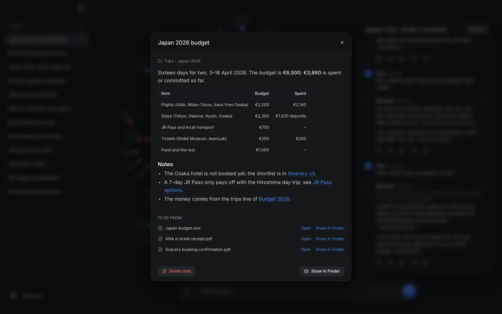
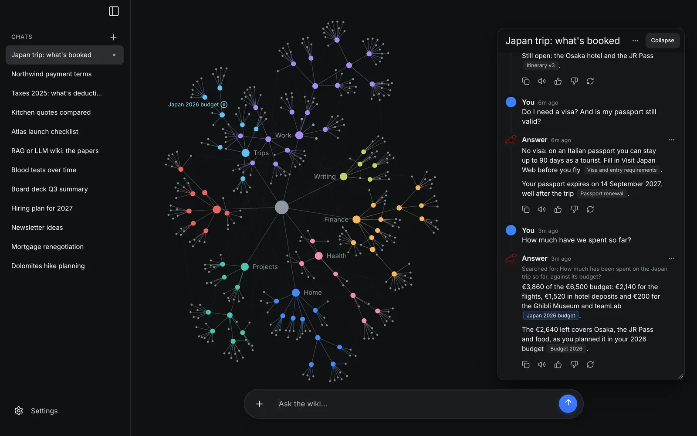
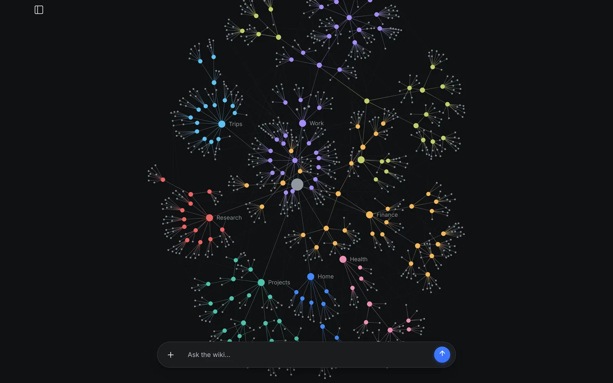
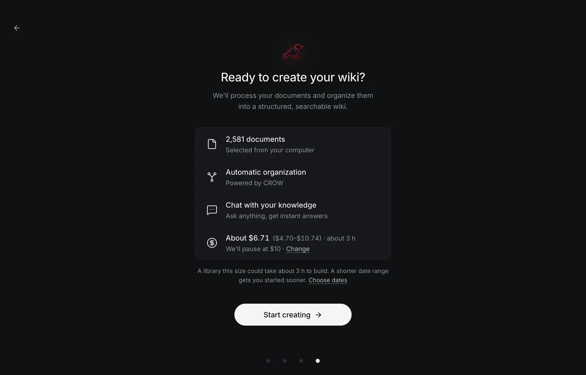
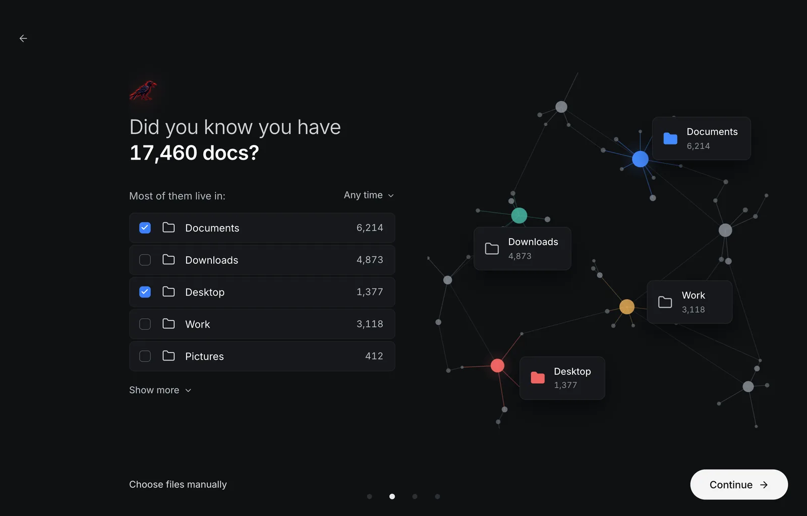
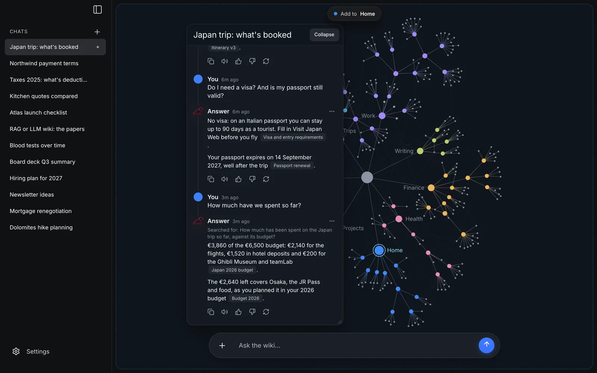
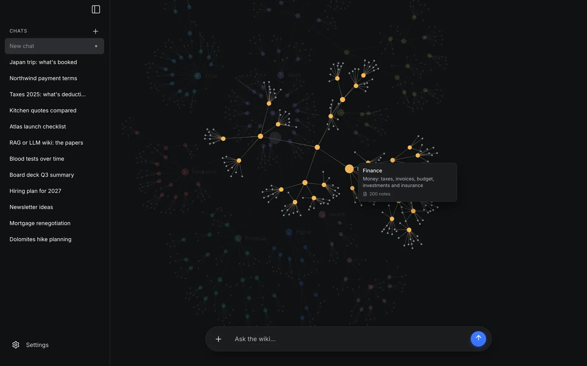
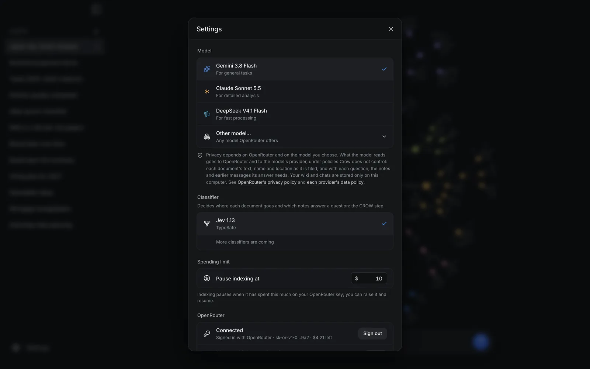
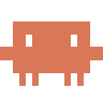
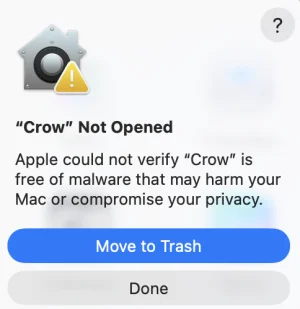

Finds your documents by itself
Crow counts the documents in your home folder and shows where they live: Documents, Desktop, Downloads… You tick the folders (or a date range, or single files) and see the cost and the time before anything is spent.
Turn your documents into a living wiki you can chat with.
Crow finds your PDFs, Word files, slides and spreadsheets by itself, files them into a wiki of linked Markdown notes, and answers your questions citing the notes it used.
Apple silicon · Crow 0.1.4 · free and open source · macOS, Windows and Linux
This is Crow's brain, drawn by the app's own code. It holds the example wiki that comes with llm-wiki-v2 (llmwiki2 demo): the notes of Lumen Coffee Roasters, a small roastery in Turin that does not exist.
Drag the dots, open a folder, read a note, find one, or play a question and watch the notes it read light up.
Loading the brain…
Drag a dot · Click the brain, then scroll to zoom · Click a folder to focus it
The answers were recorded on 4 November 2026 from llmwiki2 0.8.0 in CROW mode, Jev 1.13 deciding and Gemini 3.8 Flash writing. Nothing on this page calls a model. The example wiki on GitHub.
A wiki of Markdown notes, filed by topic and linked to each other, that you can chat with. It is the LLM wiki idea Andrej Karpathy described, built for thousands of documents and for people who would rather not use a terminal.
Crow counts the documents in your home folder and shows where they live: Documents, Desktop, Downloads… You tick the folders (or a date range, or single files) and see the cost and the time before anything is spent.
Each document becomes a note in a folder about its subject. A new document on a subject updates the note already there instead of adding a copy, and a folder that grows is split into subfolders. Filing goes oldest first, so the newest facts win; files already filed, and duplicates, cost nothing again.
Answers cite the notes they come from, and those notes light up in the brain, the graph of everything you filed. Follow-up questions are understood in context.
A chat forgets when it ends; the wiki doesn't. Every document you add makes the notes you already have better, and you can drop a new file onto a folder of the brain to file it there.
The wiki is a folder of Markdown files on your computer, in Google's Open Knowledge Format: open it in Obsidian or any editor, back it up, keep it in git. Your documents are never changed or moved.
Gemini, Claude, DeepSeek or any model on OpenRouter, through your own account. Crow pauses at your spending limit and continues where it stopped after a restart.
One button connects Claude, Claude Code, ChatGPT or Codex: they look things up in your wiki, with its notes as sources, and keep what they learn in it. How it works
Crow is free under the GNU AGPL v3.0 or later. You pay OpenRouter for the models it uses, and Crow estimates that cost before it starts.
Crow reads PDF, Word (.docx), PowerPoint (.pptx), Excel (.xlsx), CSV, OpenDocument text and spreadsheets (.odt, .ods), Markdown and plain text; a spreadsheet becomes a note per sheet. Scanned PDFs without a text layer are skipped: Crow does no OCR yet.
Recorded in the app, on a sample wiki made up for the recordings.








Press Connect AI apps in Crow's sidebar, then Connect next to the app. From then on the app can ask your wiki, read a note and keep what it learns: a decision, a fix that worked, a preference, filed by Crow like any other note.
Crow adds itself to Claude's MCP servers; on macOS, if Claude is open, the button reads Connect and restart and Crow reopens Claude for you.
Elsewhere, quit Claude first, connect, then open Claude.

Crow runs claude mcp add for you, for every project.
Then start a new session.
Crow adds itself to Codex's settings, which the ChatGPT app reads; on macOS it restarts ChatGPT if it is open.
Elsewhere, quit ChatGPT and open it again.
Crow adds itself to ~/.codex/config.toml.
Then start a new session.
recallAsks your wiki. The answer cites its notes, as Crow's own chat does.
read_noteReads one note of the wiki in full.
rememberKeeps what the app learns: Crow files it, merged and linked like any other note.
It works on macOS, Windows and Linux, through MCP, on your computer only: the app runs Crow itself, which hands everything to the Crow that is running. Crow need not be open: it opens in the background the first time an app needs it.
If Crow cannot connect an app, the window says why and shows the command or the lines to paste, with a Copy button. ChatGPT Classic and ChatGPT on the web reach only servers on the internet, so they cannot use Crow: the new ChatGPT app can.
Any other MCP client (Cursor, VS Code…) can run the same local (stdio) server: Crow's own executable with the argument mcp.
# macOS /Applications/Crow.app/Contents/MacOS/crow mcp # Windows, in the folder Crow was installed in (usually %LOCALAPPDATA%\Crow) crow.exe mcp # Linux: crow mcp, or your AppImage's path then mcp crow mcp
What a connected app recalls goes to that app's provider (Anthropic or OpenAI) as part of your conversation, under that app's terms. What it asks Crow, and asks it to remember, goes to your OpenRouter model, at the same prices as your own questions.
Most "chat with your PDFs" tools use RAG: they cut documents into chunks, keep them in a vector database, and look them up again at every question. Crow reads each document once, summarizes it into a note in the right folder, merges it with what the wiki already knows and links it to related notes. Answers read those notes and cite them, and you can open, correct and keep every one.
| Crow (LLM wiki) | Typical "chat with PDF" tool (RAG) | |
|---|---|---|
| Finding your documents | Crow finds them on your computer | You upload them |
| What you keep | Readable Markdown notes, filed and linked | A vector index no one reads |
| A new document on the same subject | Updates the note already there | Adds more chunks |
| Where it lives | A folder on your computer | Often a cloud service |
Karpathy's LLM wiki finds pages by having the model read an index, which works up to about a hundred sources. CROW makes it scale: a small classifier picks each document's folder among every folder of the wiki in one choice, and answering walks the folders level by level, so the wiki keeps growing without a vector database. The LLM is kept for writing: summarizing a source, naming a new folder, rewriting a note it merges into, and the final answer.
In the CROW paper, retrieval kept its accuracy across a twentyfold growth of the wiki.
| Step | Classic | CROW |
|---|---|---|
| Summarize the source into a note | LLM | LLM |
| Route: best folder, or a new one | LLM | Classifier |
| Same subject as an existing note? | LLM | Classifier |
| Merge into it, or write a new note? | LLM | Classifier |
| Name a new folder, rewrite a merged note | LLM | LLM |
| Related notes (See also) | LLM | Classifier |
| Find the notes for a question | LLM | Classifier |
| Write the answer | LLM | LLM |
89%
right note read
2.1×
faster per ingest
68%
fewer LLM tokens per ingest
These are the authors' own measurements, from llm-wiki-v2's benchmarks. The paper measures one corpus of 525 personal documents, mostly in Italian, with one LLM and one classifier version, and says so among its limitations. The corpora and scripts are public in benchmarks/, and every script has a --dry-run, so you can run them with your own models.
Released 28 October 2026, for macOS, Windows and Linux. Crow is free; you pay OpenRouter for the models it uses.
Crow's installers are not signed with an Apple or Microsoft developer certificate yet, so macOS and Windows warn you the first time you open it. That is expected for an unsigned app; here is how to open it. You do this once.
On macOS Sequoia, Tahoe and later:
.dmg (Apple silicon for Macs with M1 or later, Intel for older ones) and drag Crow into Applications.
xattr -dr com.apple.quarantine /Applications/Crow.app, and open Crow again.Then macOS asks once per folder (Documents, Desktop, Downloads) before Crow may look into it: allow the folders you want in your second brain.
On Windows 10 and 11:
Crow_…_x64-setup.exe. If Microsoft Edge says it isn't commonly downloaded, click … next to it → Keep → Show more → Keep anyway. In Chrome, click Keep.chmod +x Crow_*.AppImage, then ./Crow_*.AppImage (or right-click → Properties → Allow executing file as program). If it doesn't start and mentions FUSE, install it: sudo apt install libfuse2t64 on Ubuntu 24.04 and later, sudo apt install libfuse2 on 22.04.sudo apt install ./Crow_*_amd64.debsudo dnf install ./Crow-*.x86_64.rpm (or sudo zypper install on openSUSE)WEBKIT_DISABLE_DMABUF_RENDERER=1.Already have an OpenRouter key? Crow also reads OPENROUTER_API_KEY from the environment, or from a .env file.
Crow is free. You pay OpenRouter for the models it uses. Before filing starts, Crow estimates the cost from OpenRouter's current prices and the real size of each document you picked, and it stops on its own at your spending limit ($10 unless you change it). With the default model, a typical document costs a fraction of a cent; a library of thousands takes hours, so start with a folder or a recent date range and add more later.
Your wiki and your chats are stored only on your computer, but what the models read goes to OpenRouter, which passes it on to each model's provider: to file a document, its text, its name, where it is on your computer and the notes it may join; to answer a question, the question, the notes the answer draws on and the chat's earlier messages. What they keep is up to OpenRouter's privacy policy and each provider's own. Your privacy settings on OpenRouter let you turn away providers that train on prompts.
The films that went out with each release, on LinkedIn and X.
Crow runs the CROW architecture of the open-source llm-wiki-v2 engine. Give it your documents: it files them into a tidy wiki of Markdown notes and answers your questions, citing the notes it used. It runs on your computer, with any AI provider: OpenRouter, OpenAI, Gemini, Ollama (free and local) or any OpenAI-compatible server.
It is a Python library, a command line and a web page with the brain, and it can be the long-term memory of Claude Code, Codex or any MCP client. Every step of the ingest and ask flows is a function you can replace.
from llmw2 import Wiki
Memory for AI agents (MCP)recall, remember, read_note
How CROW decidesThresholds and fallbacks
BenchmarksCorpora and scripts, with --dry-run
ChangelogEvery release since 0.1
DiscussionsQuestions and ideas
pip install llmwiki2 llmwiki2
Your browser opens: pick a provider, paste its key, press Test connection, then Save and start. No Python? uv tool install llmwiki2.
uvx llmwiki2 demo
pip install 'llmwiki2[mcp]'
# open Memory on the page, press Start, then:
claude mcp add --transport http --scope user llm-wiki http://127.0.0.1:8000/mcp
codex mcp add llm-wiki --url http://127.0.0.1:8000/mcp
from llmw2 import Wiki
wiki = Wiki.from_env(bundle="./wiki")
wiki.init()
wiki.ingest_file(open("minutes.pdf", "rb").read(), "minutes.pdf")
answer = wiki.ask("What did we decide about enterprise pricing?")
print(answer.text, answer.citations)
LLM wikis have been proposed as an alternative to classical retrieval-augmented generation (RAG): a large language model (LLM) incrementally organizes knowledge into a directory of notes that can be inspected directly and grows with little manual upkeep, at the price of LLM calls whose cost grows with the knowledge base.
Many of these calls are spent on decisions rather than on writing: where a new source belongs, which notes it relates to, which notes answer a question. We introduce CROW (Classifier-Routed Organization of LLM Wikis), a decision layer for LLM wikis that delegates these routing and consolidation decisions to a general-purpose typed classifier, such as the recently released Jev, and reserves generative calls for the steps that require writing text.
In CROW, ingestion relies on a short sequence of classifier calls and invokes an LLM only to summarize the incoming source, to name new folders and, when an existing note must be updated, to rewrite it, while retrieval uses the classifier to select the relevant notes and leaves to the LLM only the final answer. CROW does not replace the compilation of entity, concept and synthesis pages that gives LLM wikis much of their value. We specify how each decision maps onto classifier primitives, position the design with respect to memory systems for LLM agents, model routing and candidate-then-verify pipelines, and discuss the effects on cost and latency that we measured in a 525 documents ingestion and retrieval benchmark.
From the paper on 22 September to the code going public on 9 October, the desktop app a week later and a release every few days since. The numbers below are the ones published on LinkedIn on 3 November 2026.
Wikis of thousands of documents built from empty: top-level areas you decide, costs estimated and capped, steady speed as it grows, and nothing lost if a run stops halfway.
Claude, Claude Code, ChatGPT and Codex use the wiki as their memory, through MCP, with one button each.
Each document is filed with one choice among all the wiki's folders, which costs less, and a folder that grows is split into subfolders by subject.
For macOS, Windows and Linux, over llmwiki2 0.4.4, with an onboarding in five screens. Crow 0.1.1 and 0.1.2 followed the same day, with llmwiki2 0.5.0, which reads Word, PowerPoint, Excel and OpenDocument files.
pip install llmwiki2The first release on PyPI, 0.4.1.
Move notes, describe folders, ingest large documents; CROW works out the classifier's confidence itself.
crow-hq/llm-wiki-v2 on GitHub, and the paper's version 1.0 on Zenodo with the link to the code.
CROW: Classifier-Routed Organization of LLM Wikis, on Zenodo.
The two authors of the CROW paper, of llm-wiki-v2 and of Crow.
I build memory systems for agents, and humans.His bio on X
AI engineer. Agents, RAG and LLM pipelines measured on real data, not demos.His bio on GitHub
Questions, ideas, bugs, or a commercial licence without the AGPL's obligations?
A second brain is a system outside your head that keeps what you read and learn, so you can find it and connect it later. Crow builds one from the documents you already have: you don't write, tag or file anything yourself.
An LLM wiki is a set of Markdown pages that a language model writes and keeps up to date from your sources, an idea Andrej Karpathy described in 2026. Instead of searching your documents again at every question, the model reads each source once and files what it says. Crow is a desktop app that builds one from your files and keeps it organized as it grows to thousands of documents.
Install Crow, tick the folders that hold them, and start: Crow files them into the wiki, oldest first, and you can ask questions while it works. Each answer names the notes it used, so you can open them and check.
Yes. The wiki is a folder of Markdown files with relative links and an index.md in every folder, so Obsidian opens it as a vault, graph view included. Settings → Library → Show in Finder/Explorer shows where it is. Crow doesn't need Obsidian.
It never changes or moves them: Crow reads the folders you choose and keeps a copy of each document's text inside the wiki. Deleting a note, or resetting Crow, never touches your documents. To file a document, its text goes to the model you chose through OpenRouter (see Privacy, under Download).
Gemini 3.8 Flash (the default), Claude Sonnet 5.5, DeepSeek V4.1 Flash, or any other model on OpenRouter, under Advanced settings; a small classifier model, Jev, decides where each document goes. Crow works through OpenRouter, so it needs an internet connection; local models are not supported in the app yet. The llm-wiki-v2 engine runs with Ollama from the command line.
Yes: Connect AI apps, in Crow's sidebar, connects Claude, Claude Code, ChatGPT and Codex in one click each (see AI apps). Any other MCP client (Cursor, VS Code…) can run the same local (stdio) server: Crow's own executable with the argument mcp. The wiki is also plain Markdown with an index in every folder, so an agent that reads files can use it directly.
NotebookLM works on the sources you upload to it, notebook by notebook, in Google's cloud. Crow finds the documents on your computer by itself and writes one wiki of Markdown files that stays on your computer, which you can read, edit and keep, with the models you choose through OpenRouter.
A typed classifier by TypeSafe AI. Given a text, it answers typed questions (pick one of these options; is this statement true?) with probabilities instead of prose. CROW asks it every filing and retrieval decision and keeps the LLM for writing. CROW does not depend on it: any classifier that returns those probabilities can take its place. The authors have no ties to TypeSafe AI.
Because Crow's installers are not signed with a paid Apple or Microsoft developer certificate yet. The warning is expected; Install Crow shows how to open it.
The AGPL keeps the code and every change to it open, also when it runs as a service. It is free to use, study, change and share, including for your own business; if you offer a modified version to others, over a network too, you share its source under the same licence. Commercial licences without that obligation are available from the authors.
Apple silicon · every system